Interactive revision · Themes 1 – 4 · UHE00111
Made by Faisal Albusaidi
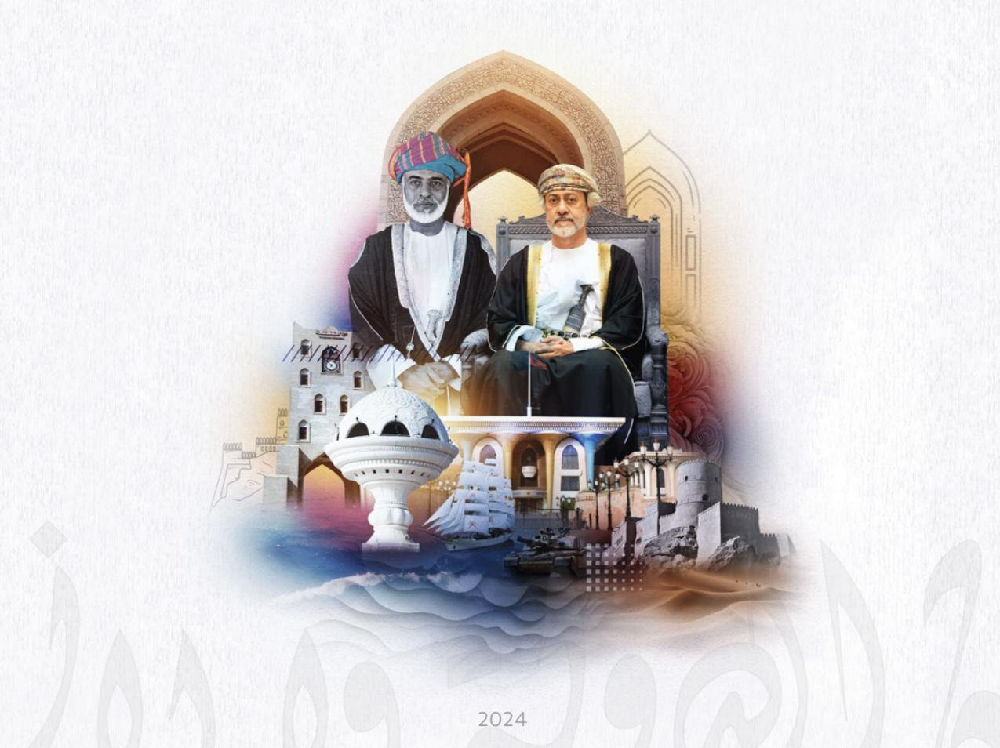
“We are Muslim people who take pride in our Islam and our faith…”Sultan Qaboos bin Said, 1975
Zayed, 2023
Course text
Sharing water
Sustaining life
Living from the sea
Strongest in rural & coastal communities
Allah has blessed this country and its people with tolerance, kindness, good treatment of others, and rejection of hatred and discord.
Sultan Qaboos bin Said · opening of Majlis Oman, 2011
Rooted, yet adaptable
Progress without loss
Open to others
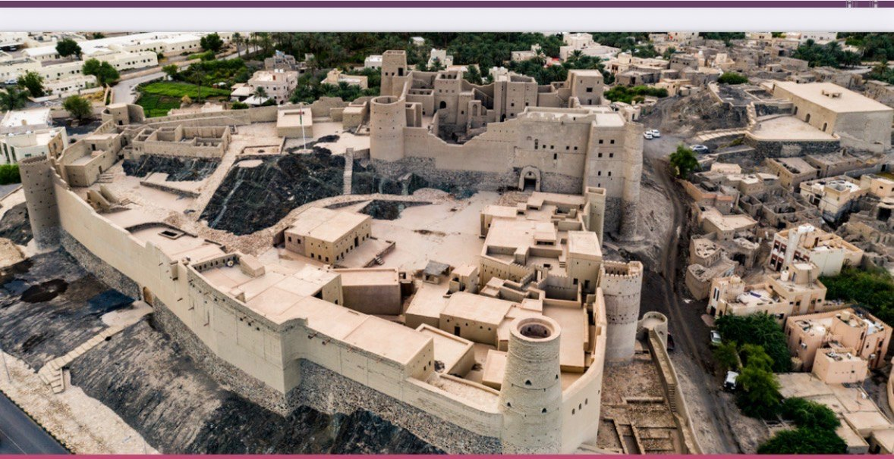
Bahla Fort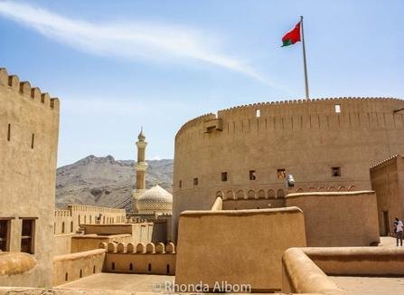
Nizwa Fort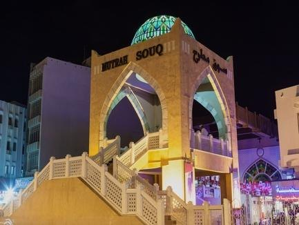
Mutrah Souq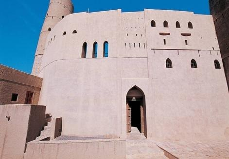
Omani fortSouqs · Mutrah
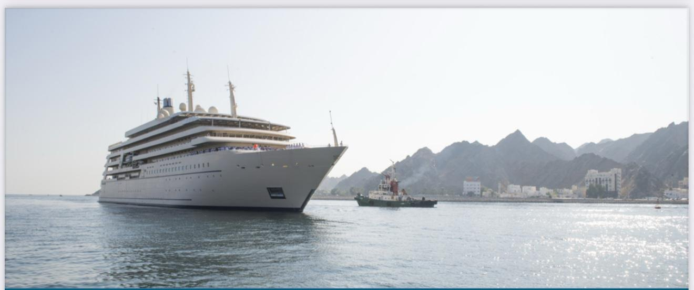
Knowledge & dialogue between civilizations
→ Pride & social cohesion
Africa · Asia · Arab world → one balanced society
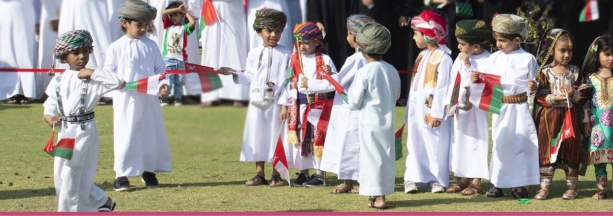
“Wherever we turn in our dear homeland, we find our noble people expressing loyalty and sincerity…”Sultan Qaboos bin Said, 1971
Freedom of belief
Homeland & people
Narrow, outside law
Divides society
Citizenship · unity · equality — not race or sect
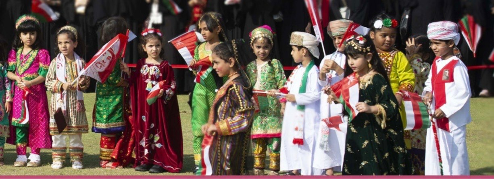
“The stronger the sense of belonging, the higher the sense of loyalty.” — Theme 2
A status bestowed on those who are full members of a community… equal with respect to the rights and duties.
T. H. Marshall, 1950
Tap a right or a duty to place it on the scale
Unites all citizens
Rights & responsibilities
Building the nation
Not based on wealth, colour or tribe · Basic Statute RD 101/1996
Regardless of nationality, race, gender or religion
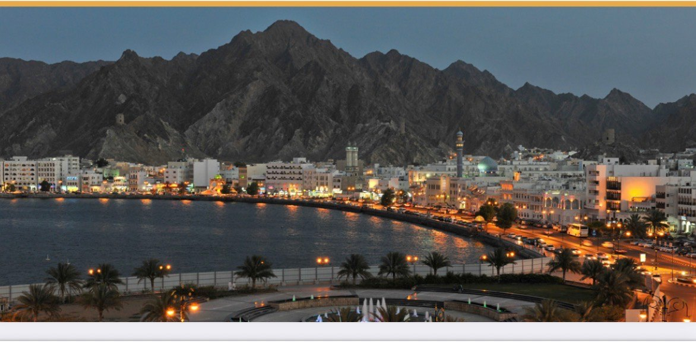
“O People, I will work as swiftly as possible to ensure that you live happy lives…”Sultan Qaboos bin Said, 1971
Trade & friendship treaties: USA · France · Britain
Kinship · tribal cooperation · faith · poetry & folk music
Services for every citizen
“Oman today stands in marked contrast to its past…”Sultan Qaboos bin Said, 1975
“I will work, as soon as possible, to establish a modern government based on sound foundations…”
Sultan Qaboos bin Said, 1970
Health · education · networks
The citizen is the basis of development, and its goal.
Sultan Qaboos bin Said, 1973
“…to open the doors of science and knowledge to Omani men and women…”
Sultan Qaboos bin Said, 1990
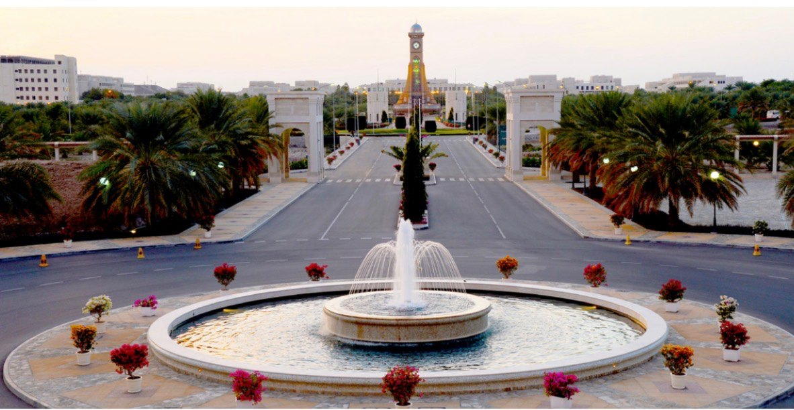
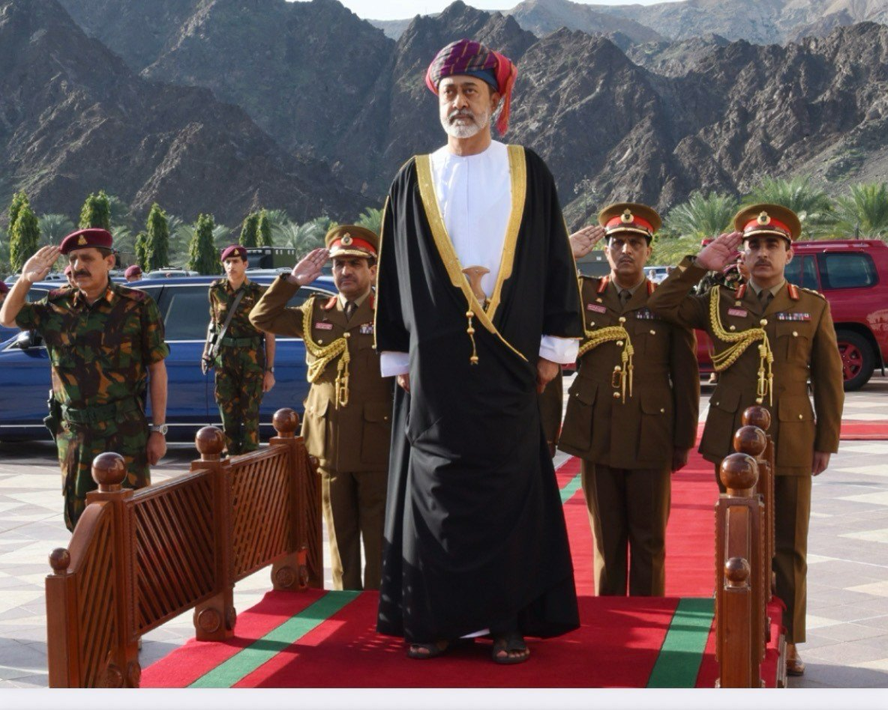
“The trust placed upon us is a great responsibility…”His Majesty Sultan Haitham bin Tariq, 2020
Cousin of Sultan Qaboos
Volatile revenue
Beyond oil
Beyond rent
Shifting powers
| →Space | Next build / slide |
| ← | Previous |
| O | Overview of all slides |
| P | Presenter notes window |
| F | Fullscreen |
| B | Black screen |
| Q | Open the question bank |
| Hover | Underlined items & cards reveal details |